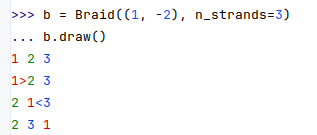
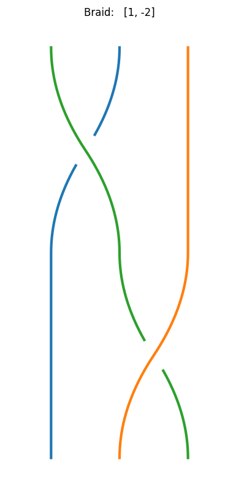
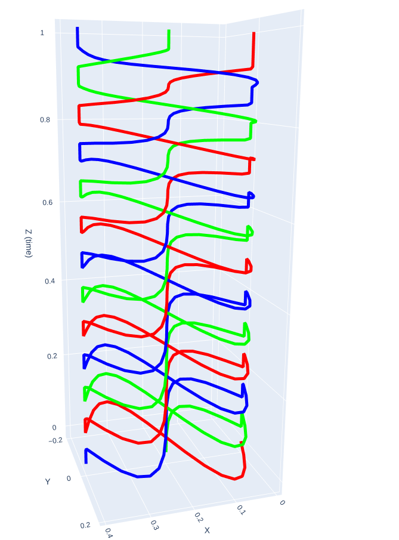
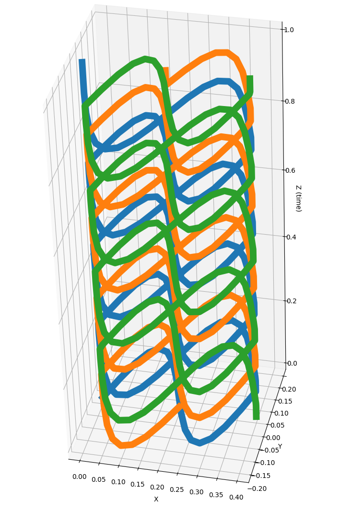

Visualizing braids
The followign code presents the different visualizations integrated in braidpy:
from braidpy import Braid
from braidpy.parametric_braid import ParametricBraid
from braidpy.parametric_strand import braid_to_parametric_strands
import matplotlib
matplotlib.use("QtAgg")
b = Braid((1, -2), n_strands=3)
b.draw()
b.plot()
strands = braid_to_parametric_strands(b ** 12)
p = ParametricBraid(strands) # .plot()
p.plot()
Draw colored braid diagram in terminal
The tirst basic visualization enables to draw a braid diagram directly in the console, with some colors !
[]
The direction of the arrow indicates the braid of the corresponding color is moving above its neighboor.
Plot colored braid diagram
The second type of visualization enables to plot a 2D braid diagram using matplotlib:
b.plot()
[]
Warning: for now this plot is using braidvisualizer and is not following the same color code.
Plot 3D braid
The third level is 3D visualization. You first need to convert your braidword to a parametric braid. Then you can plot the parametric braid using either matplotlib or plotly:
[]
Using matplotlib: []